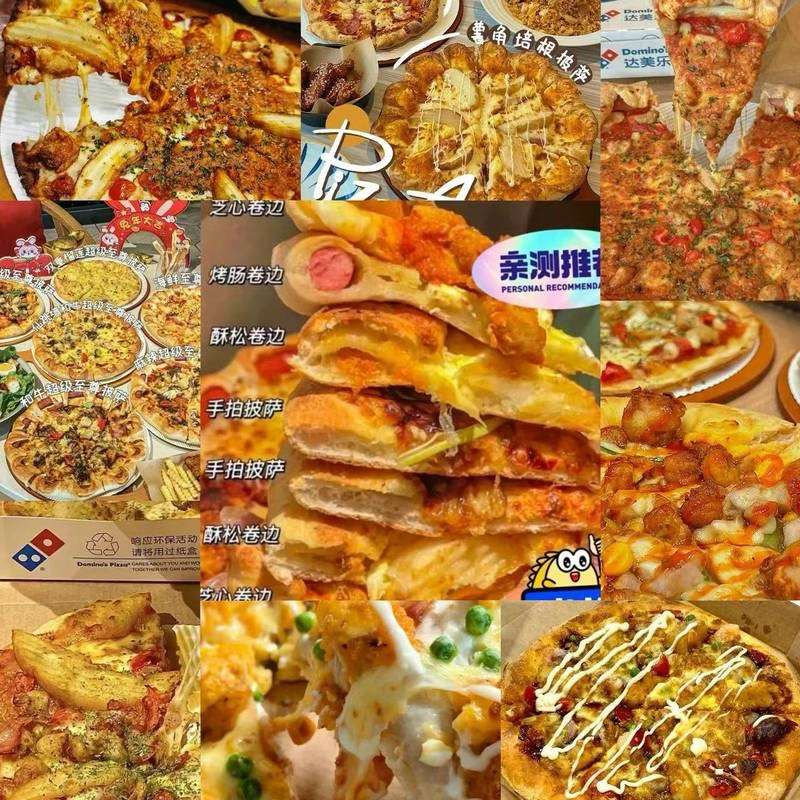
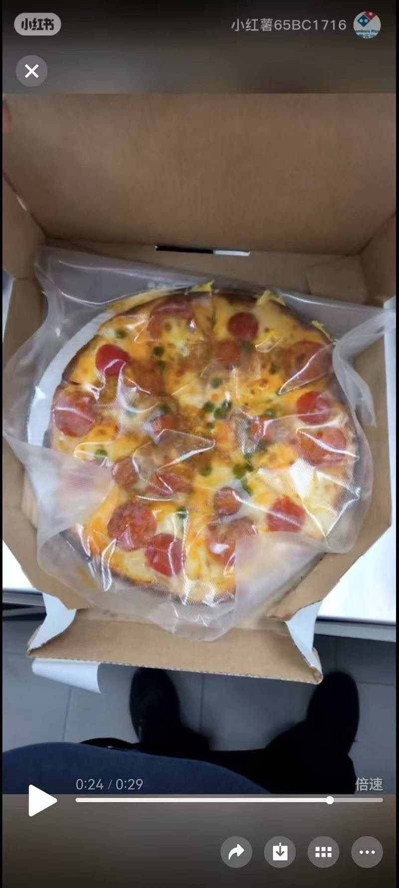
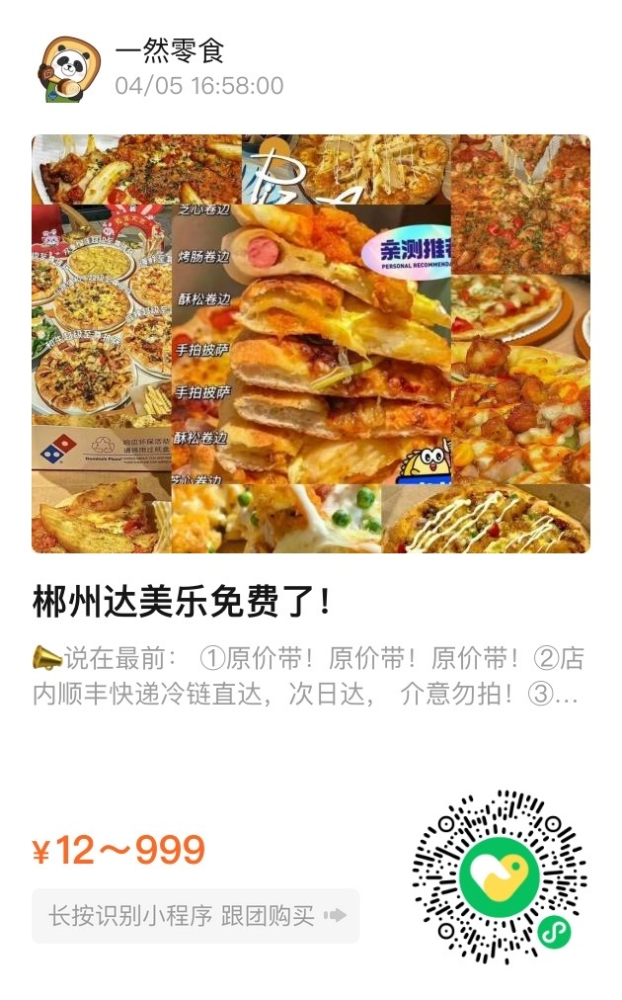

达美乐披萨



快团团跟团传送门
关于我们
我们是一家致力于提供优质服务的企业。
自成立以来，我们一直秉承着“客户至上”的原则，努力为您提供最优质的产品和服务。
我们的团队由一群充满激情和经验丰富的专业人士组成，他们拥有广泛的知识和技能，能够满足您的各种需求。
联系我们


Email: contact@example.com
电话: +86 18974217026
地址: 湖南省郴州市北湖区香雪路北一门旁一然零食